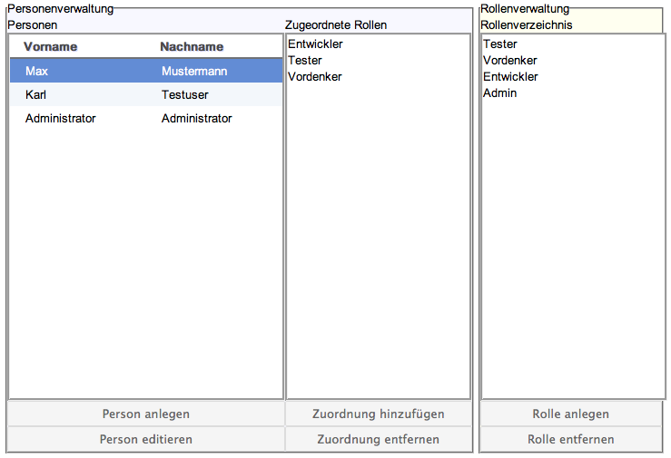

Die Personen- und Rollenverwaltung
Dieser Anwendungsteil dient der zentralen Verwaltung von Personen und Rollen, sowie deren Zuordnung untereinander.
Der gelb hinterlegte Bereich auf der rechten Seite listet alle in der Anwendung vorhandenen Rollen untereinander auf und bietet über die Buttons "Rolle anlegen" und "Rolle entfernen" Möglichkeiten diese Stammdaten zu verändern.
Weitere Informationen dazu finden Sie unter "Rolle anlengen" bzw. unter "Rolle entfernen".
Der blau hinterlegte Bereich auf der linken Seite dient der Personenverwaltung. Die Liste "Personen" zeigt alle in der Anwendung vorhandenen Personen mit Vor- und Nachnamen. Über die Buttons "Person anlegen" und "Person editieren" können diese Stammdaten verändert werden.
Weitere Informationen dazu finden Sie unter "Person anlegen", bzw. unter "Person bearbeiten".
Die Liste "Zugeordnete Rollen" im blau hinterlegten Bereich zeigt dynamisch zur jeweils selektierten Person aus der linken Liste die zugeordneten Rollen an. Hier lassen sich auch neue Zuordnungen hinzufügen oder bestehende Zuordnungen entfernen.
Weitere Informationen dazu finden Sie unter "Zuordnung hinzufügen", bzw. unter "Zuordnung entfernen".

Wird eine Rolle nicht weiter benötigt, kann Sie aus der Anwendung entfernt werden. Dazu wird die jeweilige Rolle aus dem Rollenverzeichnis selektiert und über den Button "Rolle entfernen" gelöscht.
Rollen können nur entfernt werden, wenn Sie keiner Person zugeordnet sind. Wenn sie eine Rolle entfernen wollen, die noch eine Zuordnung enthält, werden Sie über eine kurze Nachricht darüber informiert. Um diese Rolle dennoch zu löschen müssen Sie vorher die Zuordnung entfernen.
Weitere Informationen dazu finden Sie hier.
Um einer Person eine neue Rolle hinzuzufügen, wählen Sie die betreffende Person aus der Liste "Personen" und mindestens eine Rolle aus dem Rollenverzeichnis aus und klicken den Button "Zuordnung hinzufügen". Sie können das Ergebnis kontrollieren, in dem Sie die betreffende Person aus der Personenliste auswählen und deren Zuordnungen in der Liste "Zugeordnete Rollen" kontrollieren.
Um einer Person eine Rolle zu entfernen, wählen Sie die betreffende Person aus der Liste "Personen" aus, so dass deren Zuordnungen in der Liste "Zugeordnete Rollen" dargestellt werden. Anschließend wählen Sie die Zuordnung aus der Liste aus, die sie auflösen wollen und klicken den Button "Zuordnung entfernen".
Created with the Personal Edition of HelpNDoc: Create HTML Help, DOC, PDF and print manuals from 1 single source